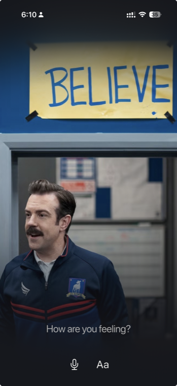
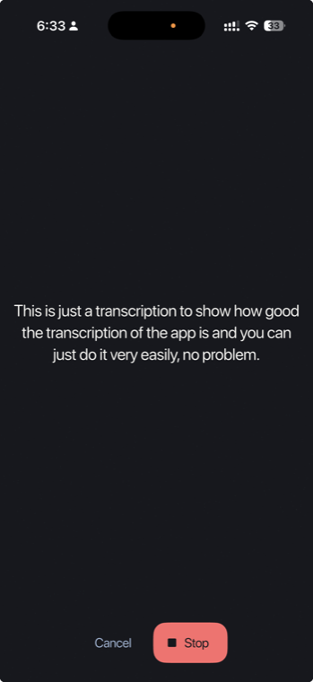
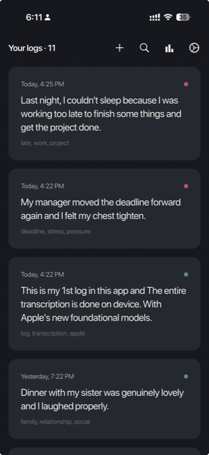
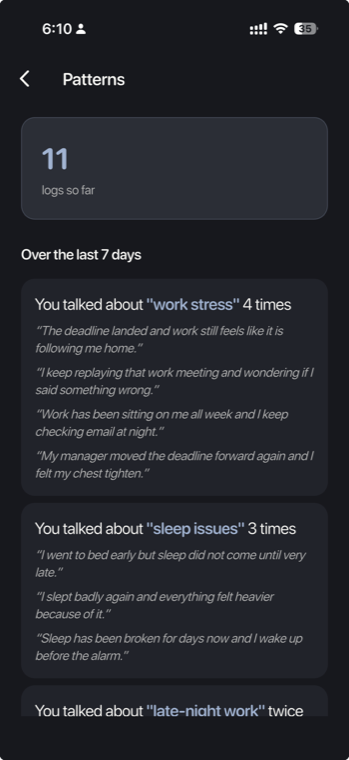
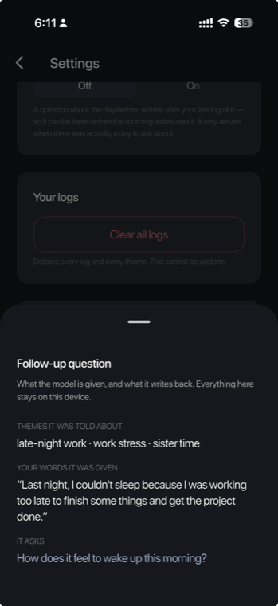
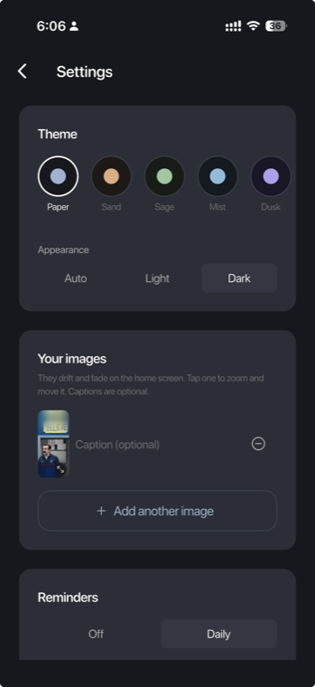

local-first · ios 26
A journal that notices what you keep coming back to.

architecture
Flutter draws. Swift thinks.
app/speech
EventChannel + MethodChannel
app/nlp
MethodChannel
app/genai
MethodChannel
the models
Four models — and one thing that isn't
SpeechTranscriber
Speech recognition. Its weights download per language and live on the phone.
NLTagger · sentiment
A trained classifier. One score per log, −1 to +1.
NLContextualEmbedding
512 numbers per sentence. This is what makes different words the same theme.
SystemLanguageModel
Names themes, writes the follow-up. Typed output via @Generable.
NLTokenizer — not a model. Rules and dictionaries.
It cuts a log into sentences — and a theme is a sentence, not a log. "Dinner with my sister was lovely, but work is still on me" is two different themes in one paragraph. It runs before every embedding call.
flow 01
You talk
- 1Words arrive revisable — "chest tight" becomes "chest tighten"
- 2Each word gets an id, so only new words fade in

flow 02
Then the log is taken apart

flow 03
The pattern comes back
Last 7 days
Table view
| Theme | Entries |
|---|
- 1Counted by distinct logs, not sentences
- 2Every count is backed by your own words

flow 04
And the morning after, it asks
- 1Only the day after — never in the moment
- 2Gone the second you log today
- 3Written at save time, so the screen never waits
Yesterday's average mood picks the tone

end to end
Voice in.
Pattern out.
Nothing leaves.
